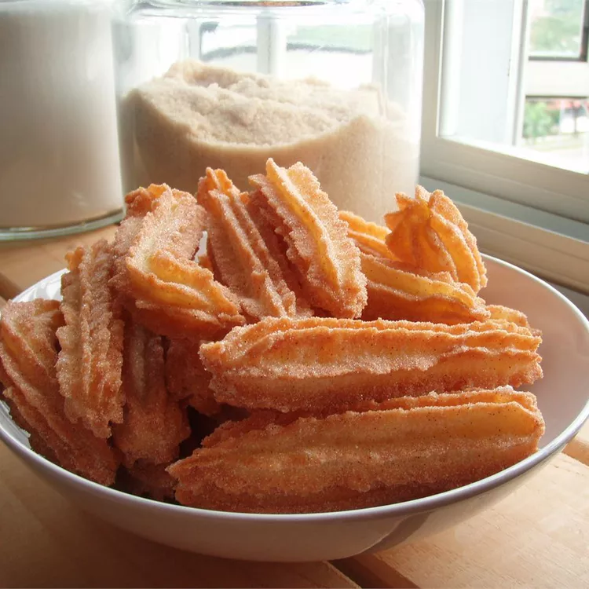

Ty's GOATED CHURRO RECIPE

Description:
in this recipe you will learn how to make my GOATED CHURROS, these are goated because they are the great of all time, no one can make better churros than me. Im here today to teach you how to make it.
Ingredients:
- 2 quarts vegetable oil for frying
- 1 cup water
- ½ cup margarine
- 1 cup all-purpose flour
- ¼ teaspoon salt
- 3 eggs
- ¼ cup white sugar
- ¼ teaspoon ground cinnamon
Steps:
- In a heavy deep skillet or deep-fryer, heat oil to 360 degrees F (180 degrees C). Oil should be about 1 1/2 inches deep.
- In a medium saucepan, heat water and margarine to a rolling boil. Combine the flour and salt; stir into the boiling mixture. Reduce heat to low and stir vigorously until the mixture forms a ball, about 1 minute. Remove from heat and beat in the eggs one at a time. Spoon the mixture into a pastry bag fitted with a large star tip.
- Carefully squeeze out 4 inch long strips of dough directly into the hot oil. Fry 3 or 4 strips at once, until golden brown, about 2 minutes on each side. Remove from hot oil to drain on paper towels. Stir together the sugar and cinnamon; roll churros in the mixture while still hot.
back to home page